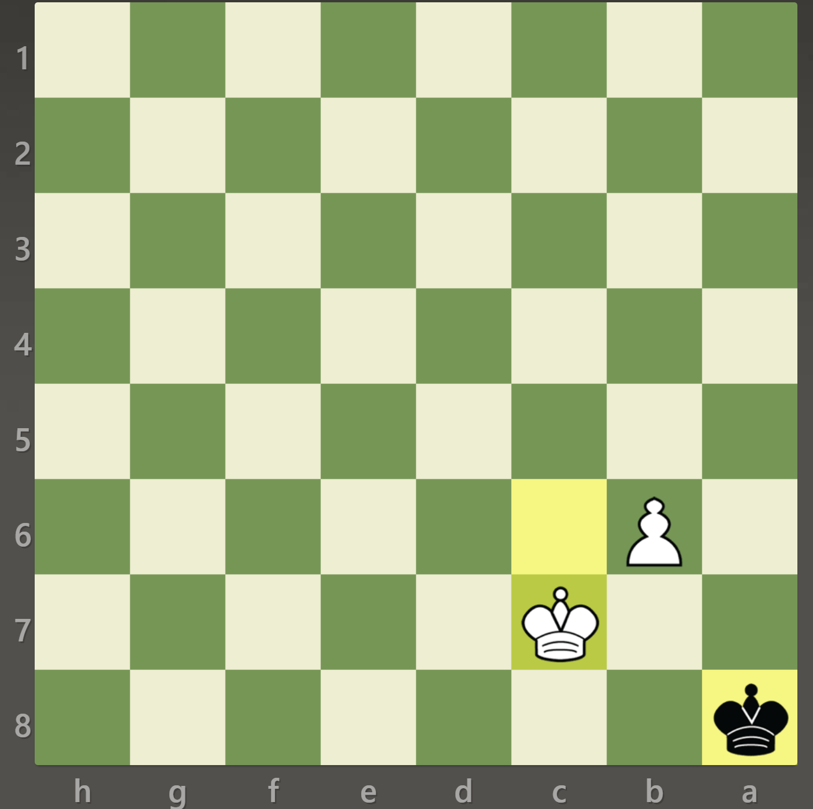

How to checkmate with a pawn and a king
- Advance the Pawn: First, start by advancing your pawn towards the eighth rank. The goal is to promote the pawn to a queen or any other desired piece. To do this, push the pawn forward while ensuring it is protected by your king.
- Support the Pawn Promotion: As you advance the pawn, it is important to support its promotion. Move your king closer to the pawn to provide protection and maintain a strong position. Your king will play a crucial role in defending the pawn and creating mating threats.
- Create a King and Pawn Checkmating Pattern: Once your pawn reaches the seventh rank, try to create a checkmating pattern involving your king and the pawn. Typically, this pattern involves a situation where your king and pawn work together to confine the opponent's king and eventually deliver checkmate.
- Activate Your King: Coordinate your king with the advancing pawn to limit the opponent's king's movement. Use your king to block escape squares and restrict the opponent's king from reaching safe areas of the board.
- Promote the Pawn: When the pawn reaches the eighth rank, promote it to a queen or another desired piece. Choosing a queen is usually the most effective option due to its greater attacking power.
- Deliver Checkmate: With your promoted queen and king, work together to deliver checkmate to the opponent's lone king. Utilize your queen's mobility and your king's support to checkmate the opponent's king. Aim to create a situation where the opponent's king has no legal moves to escape or block the checkmate.
